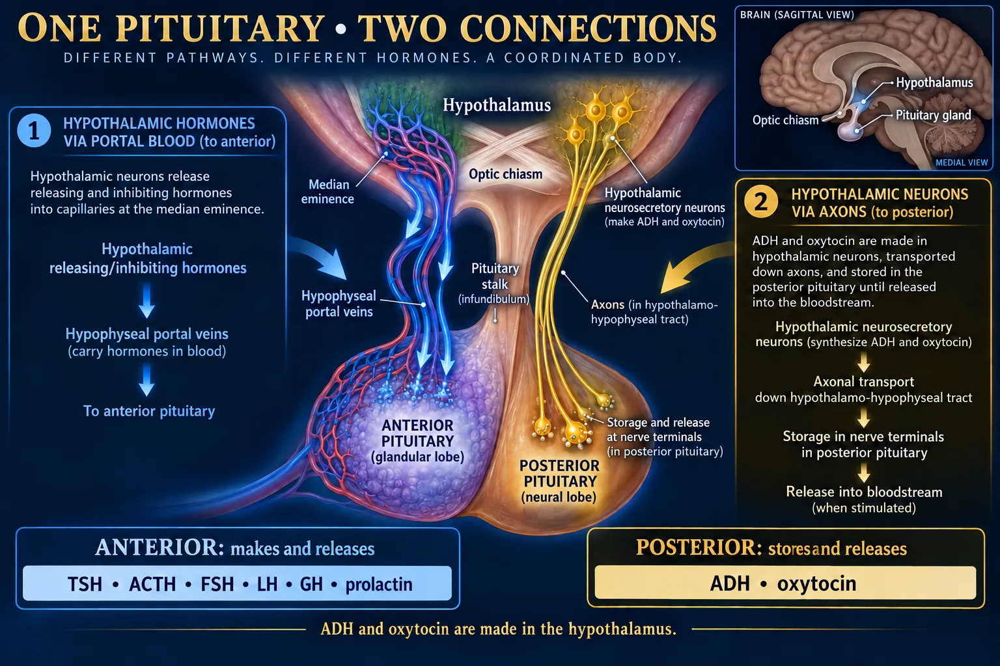
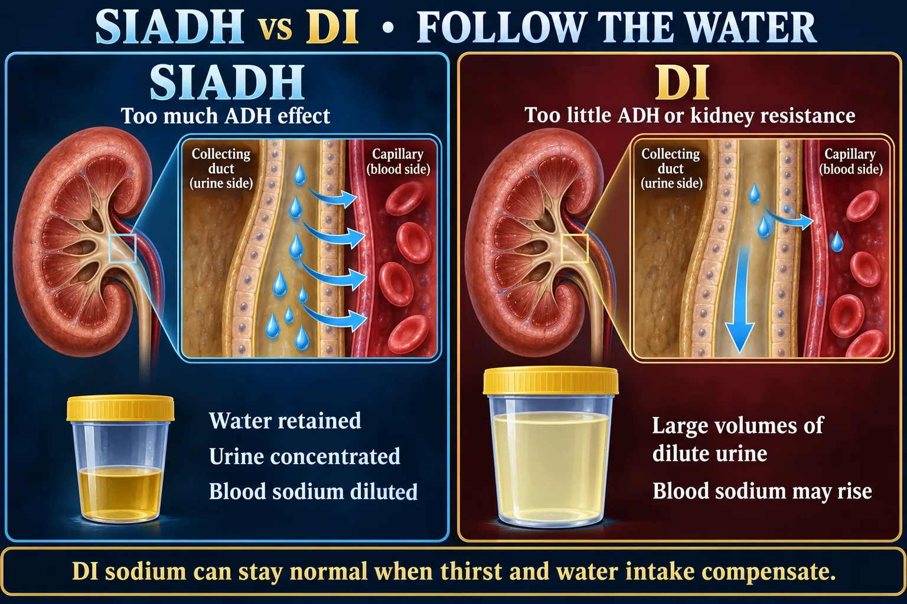

Hormone Hall of Fame II 🦋
Posterior pituitary · thyroid · parathyroid · pineal · thymus
Part 1 covered the front of the pituitary and the pancreas. Part 2 covers the back of the pituitary and the neck-and-chest glands: the two water-and-uterus hormones stored in the posterior lobe, the thyroid that sets your metabolic speed, the four rice-grain parathyroids that guard calcium, the pineal that reads darkness, and the thymus that trains your immune system and then quietly disappears.
THE POSTERIOR PITUITARY
STEP 1 · TWO HORMONESA storage locker at the end of a nerve — it manufactures nothing at all.

Portal blood controls the anterior lobe; axons connect the posterior lobe.
🔍 Open full-size illustration📖 Read the illustration as text
The anterior pituitary synthesizes TSH, ACTH, FSH, LH, GH and prolactin. ADH and oxytocin are made in hypothalamic neurons, transported along axons, and stored/released from posterior nerve terminals. The optic chiasm lies above the pituitary.
🔬 How the back lobe really works
🧠 Made above; released below
- Hypothalamic neurons make ADH and oxytocin.
- Axons transport hormones down the stalk.
- Posterior pituitary stores and releases them into blood.
Stalk/posterior injury can disturb water balance. Anterior prolactin can rise after loss of inhibitory dopamine input.
💧 ADH — antidiuretic hormone (vasopressin)
- Source
- Made in the hypothalamus, released from the posterior pituitary
- Target
- Kidney — the collecting duct
- Effect
- Makes the kidney reabsorb more water. Result: a small volume of concentrated urine and more water kept in the blood. At high concentrations it also constricts vessels — hence the other name, vasopressin
- Trigger
- High serum osmolality (blood too concentrated) · falling blood volume or blood pressure · pain, nausea, stress, surgery, opioids, nicotine
ADH controls WATER, not sodium. Everything confusing about SIADH and DI resolves once you hold on to that.
🤱 Oxytocin
- Source
- Made in the hypothalamus, released from the posterior pituitary
- Target
- Uterine smooth muscle · myoepithelial cells around the breast alveoli
- Effect
- Uterine contractions in labor and after delivery (it clamps the bleeding placental site), and milk let-down — ejecting milk that prolactin already made
- Trigger
- Stretch of the uterus or cervix · the infant suckling at the breast
♻️ Positive feedback, drawn twice
🤱 Oxytocin: positive feedback
During birth
- Cervical stretch → neural signals → oxytocin release → stronger uterine contractions → more stretch.
- The loop ends when the triggering stretch is removed.
During feeding
- Suckling → neural signals → oxytocin release → milk ejection.
- Prolactin produces milk; oxytocin moves it.
Both loops end in an event, not in a shut-off signal: delivery of the baby, or the infant coming off the breast. That is the defining feature of positive feedback.
💊 Where you will meet these two as drugs
- Desmopressin (DDAVP) — a synthetic ADH analog used to replace missing ADH in central diabetes insipidus. It is not a vasopressor — it is a water-conserving hormone, and the thing you watch for is water retention and a falling sodium, not blood pressure.
- Oxytocin infusion — used to induce or augment labor and to control postpartum bleeding. Because it is chemically close to ADH, prolonged high-dose infusion can cause water intoxication with hyponatremia.
⭐ Cut the stalk — what happens to each hormone?
| Hormone | After stalk damage |
|---|---|
| ADH | Falls → diabetes insipidus, huge dilute urine output |
| TSH · ACTH · GH · FSH · LH | Fall → hypopituitarism |
| Prolactin | RISES — dopamine was the brake and the brake line is cut |
THE THYROID
STEP 2 · THE THERMOSTATOne butterfly gland that decides how fast every cell in your body runs.
🔬 Thyroid anatomy — front and back

Thyroid follicles make thyroid hormone; separate parathyroids regulate calcium.
🔍 Open full-size illustration📖 Read the illustration as text
The thyroid has two lobes and an isthmus anterior to the trachea. Usually four parathyroids lie on its posterior surface. Follicular cells produce T3/T4 with storage in colloid. C cells produce calcitonin; its everyday calcium-regulating role in adults is smaller than that of PTH and vitamin D.
🔬 Inside the gland — follicles, colloid and C cells
🖼️ Shown in the picture: Thyroid and parathyroid anatomy ↑
Each follicle is a ring of cells around a stored pool of colloid. The thyroid is unique in the body: it banks 2–3 months of hormone outside its cells. That is why antithyroid drugs take weeks to work and why the gland can flood the body all at once in thyroid storm.
🔥 T3 & T4 — thyroid hormone
- Source
- Thyroid follicular cells
- Target
- Essentially every cell in the body
- Effect
- Increases metabolic rate and heat production, raises energy use and oxygen consumption, speeds heart rate and gut motility, and regulates growth and brain development — critical in the fetus and infant
- Trigger
- TSH from the anterior pituitary (which is triggered by TRH). Requires dietary iodine as a raw material
T4 (thyroxine) is ~90% of what is released but is relatively inactive — it is the storage form. Peripheral tissues convert it to T3, which is the potent, fast-acting one.
🧪 Calcitonin — the forgettable one, mostly
- Source
- Thyroid parafollicular (C) cells — not the follicles
- Target
- Bone and kidney
- Effect
- Lowers blood calcium — blocks osteoclasts and increases urinary calcium loss
- Trigger
- Excessively high blood calcium
In adult humans calcitonin has no essential day-to-day role — people with no thyroid at all keep normal calcium. As a drug, salmon calcitonin is used in Paget disease of bone, in some cases of hypercalcemia, and occasionally in osteoporosis.
🚨 The two directions the thermostat can break
| 🔥 HYPERthyroid — too fast | 🧊 HYPOthyroid — too slow |
|---|---|
| Weight loss despite eating more | Weight gain despite eating less |
| Heat intolerance, sweating | Cold intolerance, dry skin, hair loss |
| Tachycardia, palpitations, atrial fibrillation | Bradycardia, low cardiac output |
| Diarrhea, hyperactive bowel | Constipation |
| Anxious, restless, tremor, insomnia | Fatigue, slowed thinking, depression |
| TSH LOW, free T4 high | TSH HIGH, free T4 low (primary) |
🚨 After a thyroidectomy — the neighbors
- Airway first. Keep the head and neck supported and in neutral alignment. Check behind the neck for pooled blood — a hematoma compresses the trachea.
- Hoarseness or a weak voice may signal recurrent laryngeal nerve injury. Assess the voice on a schedule.
- Tetany — tingling around the mouth, numb fingertips, twitching, carpopedal spasm — means the parathyroids were bruised or removed and calcium is falling. Calcium gluconate must be immediately available.
- Thyroid storm — very high fever, tachycardia, agitation — is the emergency in the first 24 hours after surgery on an untreated hyperthyroid patient.
THE PARATHYROIDS & CALCIUM
STEP 3 · THE MINERALFour glands the size of rice grains that quietly keep your heart and nerves firing correctly.

Concentrated urine with diluted plasma differs from loss of large dilute urine volumes.
🔍 Open full-size illustration📖 Read the illustration as text
SIADH involves inappropriate antidiuresis and low plasma sodium/osmolality. DI is deficient ADH release or an impaired renal response, causing large dilute urine losses. Sodium can remain normal if thirst and access to water compensate. The arrows show relative water movement, not measured flow rates.
🔬 The calcium circuit, drawn through real organs

PTH acts through bone, kidney and active vitamin D.
🔍 Open full-size illustration📖 Read the illustration as text
Low blood calcium stimulates PTH. PTH promotes bone calcium release, renal calcium conservation and phosphate excretion, and renal activation of vitamin D. Active vitamin D increases intestinal calcium absorption. Higher calcium then suppresses PTH.
🦴 PTH — parathyroid hormone
- Source
- The four parathyroid glands
- Target
- Bone · kidney · (indirectly) small intestine
- Effect
- RAISES blood calcium. Pulls calcium out of bone, makes the kidney hold calcium and excrete phosphate, and activates vitamin D so the gut absorbs more calcium from food
- Trigger
- LOW blood calcium
Calcium and phosphate move in opposite directions. PTH raises calcium and lowers phosphate.
🚨 Low calcium — the nerves get twitchy
Calcium stabilizes nerve membranes. Take it away and nerves fire on their own.
- Numbness and tingling around the mouth and in the fingertips — often the first complaint.
- Trousseau sign — inflate a BP cuff above systolic; the hand goes into carpal spasm.
- Chvostek sign — tap over the facial nerve in front of the ear; the cheek and lip twitch.
- Severe: laryngospasm, seizures, prolonged QT.
Total serum calcium — a typical adult reference range is 9.0–10.5 mg/dL, but ranges vary by laboratory, so read the range printed beside the result. Check the albumin — a low albumin lowers the total calcium without lowering the active ionized calcium.
📉 High calcium — everything goes limp
Too much calcium and nerves stop firing.
- Muscle weakness, deep tendon reflexes reduced, fatigue.
- Constipation, nausea, anorexia, abdominal pain.
- Confusion, lethargy, and in severe cases coma.
- Polyuria and thirst; kidney stones over time; bone pain and fractures.
🧪 Reading a calcium panel
| Pattern | What it usually means |
|---|---|
| Ca high + PTH high | Primary hyperparathyroidism — a parathyroid adenoma making PTH regardless of the calcium |
| Ca low + PTH high | Secondary hyperparathyroidism — the glands are working correctly but calcium stays low (classic in chronic kidney disease) |
| Ca low + PTH low | Hypoparathyroidism — most often accidental damage during thyroid surgery |
| Ca high + PTH low | Calcium is coming from somewhere else — malignancy, excess vitamin D |
THE CLOCK & THE SCHOOL
STEP 4 · PINEAL + THYMUSTwo small glands that are easy to skip — and easy marks if you do not.
🌙 The pineal gland and melatonin
🌙 Body clock and immune development
Pineal: melatonin
- Light information reaches the brain’s circadian clock; darkness supports melatonin secretion.
- Melatonin signals biological night.
Thymus: T cells
- The thymus lies in the anterior upper chest and supports T-cell maturation.
- It is proportionally larger in childhood and involutes with age.
🌙 Melatonin
- Source
- Pineal gland
- Target
- Brain — sleep and circadian centers
- Effect
- Causes sleepiness at night and sets the day–night rhythm
- Trigger
- Darkness / absence of bright light. Bright light shuts it off
🛡️ The thymus and thymosin
🖼️ Shown in the picture: Body clock and immune development ↑
🛡️ Thymosin
- Source
- Thymus, in the upper chest behind the sternum
- Target
- Immature T lymphocytes
- Effect
- Drives the development and maturation of T cells — the backbone of cell-mediated immunity
- Trigger
- Not well established. Activity is highest in childhood and falls after puberty
📋 Part 2 at a glance
| Hormone | Source | Effect on tissue | Stimulus for release |
|---|---|---|---|
| ADH | Posterior pituitary (made in hypothalamus) | Kidney reabsorbs water → small amount of concentrated urine | High osmolality · falling BP/volume · pain |
| Oxytocin | Posterior pituitary (made in hypothalamus) | Uterine contraction · milk let-down | Stretch of uterus/cervix · infant suckling |
| T3 / T4 | Thyroid follicles | ↑ metabolism, temperature, energy; regulates growth & development | TSH (needs dietary iodine) |
| Calcitonin | Thyroid C cells | Lowers blood calcium; no essential role in adults; used in Paget disease | Excessively high blood calcium |
| PTH | Parathyroid ×4 | Raises blood calcium via bone, kidney and gut | Low blood calcium |
| Melatonin | Pineal gland | Sleepiness at night | Darkness / lack of bright light |
| Thymosin | Thymus | T-lymphocyte development; most active in childhood | Not well established |
QUICK RECALL
SAY IT OUT LOUD⚠️ Five traps from this page
- Desmopressin is not a vasopressor. It is a synthetic ADH analog given to replace missing ADH. Watch sodium and fluid status, not blood pressure.
- Calcitonin is not the mirror of PTH in real life. PTH is essential; calcitonin is largely dispensable in adults.
- The parathyroids are separate glands. They only live on the thyroid — they have no role in metabolism.
- The thymus shrinks with age. It is the one endocrine organ that is supposed to disappear.
- Tetany after a thyroidectomy is a calcium problem, not a thyroid one. Assess with Trousseau and Chvostek, and check that calcium gluconate is on hand.
🔗 Where this goes next
- NG-278 · Hall of Fame I — hypothalamus, anterior pituitary, pancreas.
- NG-280 · Hall of Fame III — adrenal cortex and medulla, ovaries, testes.
- NG-281 · Pituitary Disorders — anterior lobe excess and deficiency.
- NG-282 · SIADH vs DI (1) — the ADH page, in full.